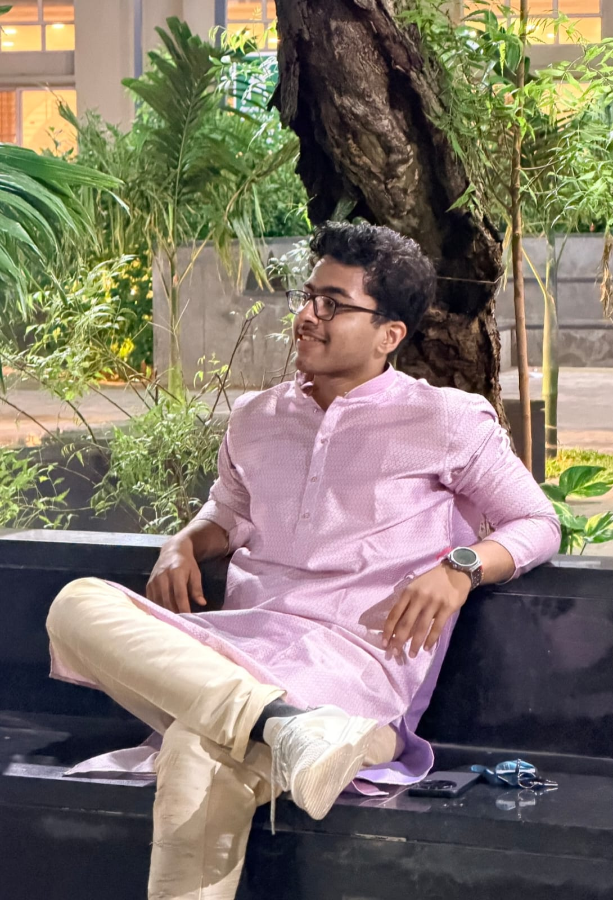

“You don't have to be great to get started, but you have to get started to be great.”
“Trust the wait. Embrace the uncertainty. Enjoy the beauty of becoming.”
“Life is either a daring adventure or nothing at all.” — Helen Keller